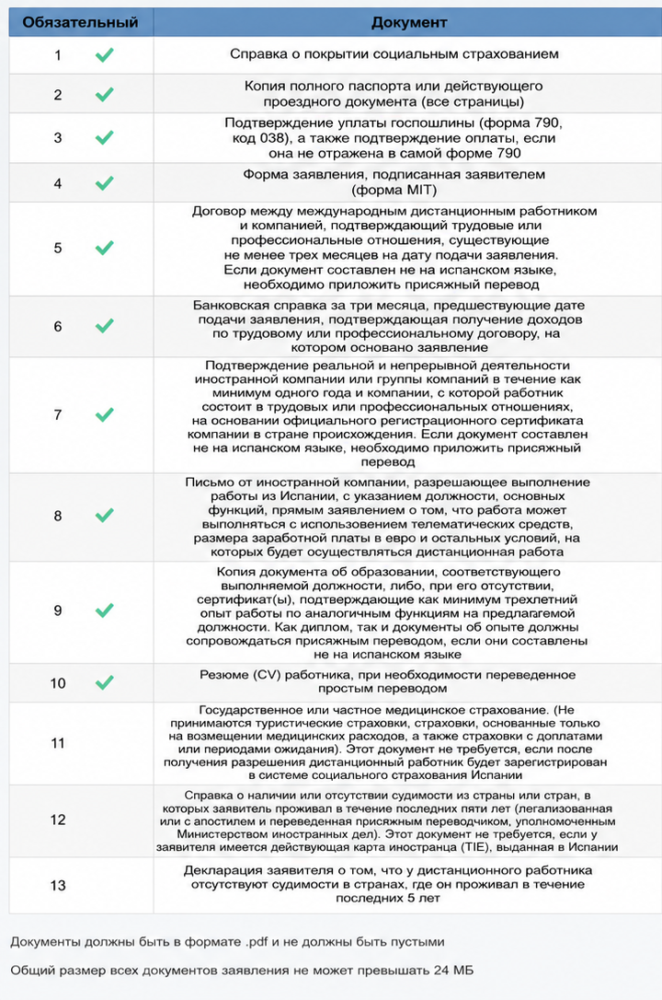
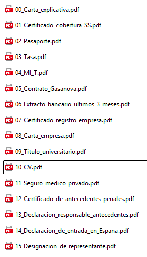

Первичная подача
Работа в найме: список документов
Для заявителя из России, который работает дистанционно из Испании по трудовому договору на иностранную компанию или группу компаний вне Испании. В испанских источниках это `teletrabajador internacional por cuenta ajena`.
Список документов
| Документ | Что подтверждает | Перевод / легализация |
|---|---|---|
| Сопроводительное письмо | Состав пакета | Нет, лучше сразу на испанском |
| Formulario MIT | Само заявление | Нет |
| Паспорт | Личность и срок действия | Обычно нет |
| Tasa 790 038 | Оплата пошлины | Нет |
| Трудовой договор | Трудовые отношения минимум 3 месяца | Если не на испанском - jurado |
| Зарплатные листы | Фактический доход | Если не на испанском - обычно jurado |
| Банковская выписка за 3 месяца | Поступление дохода | Если не на испанском - jurado |
| Регистрация компании | Компания существует минимум 1 год | Публичный иностранный документ: апостиль/легализация + jurado |
| Письмо компании | Разрешение на удаленную работу из Испании и условия | Если не на испанском - jurado |
| Диплом или опыт | Квалификация | Публичные документы: апостиль/легализация + jurado; письма - jurado |
| CV | Профиль заявителя | Достаточно простого перевода |
| Seguridad Social | Применимая система соцзащиты | Иностранные публичные сертификаты: апостиль/легализация + jurado |
| Медицинская страховка | Медицинское покрытие | Если не на испанском - jurado |
| Несудимость | Отсутствие судимости за последние 2 года | Апостиль/легализация + jurado |
| Declaracion responsable | Отсутствие судимости за последние 5 лет | Нет, лучше сразу на испанском |
Пример состава пакета для подачи
- 00_Carta_explicativa.pdfСопроводительное письмо со списком приложений и коротким объяснением пакета.
- 01_Formulario_MIT.pdfЗаявление MIT, заполненное и подписанное заявителем.
- 02_Pasaporte.pdfПолный паспорт, все страницы.
- 03_Tasa_790_038.pdfФорма 790, код 038, и подтверждение оплаты, если оно не видно на самой форме.
- 04_Contrato_laboral.pdfТрудовой договор с иностранной компанией: связь минимум 3 месяца до подачи.
- 05_Nominas_ultimos_3_meses.pdfЗарплатные листы за последние 3 месяца, если есть.
- 06_Extracto_bancario_ultimos_3_meses.pdfБанковская справка или выписка за 3 месяца с поступлениями дохода по договору.
- 07_Certificado_registro_empresa.pdfПодтверждение, что иностранная компания реально существует и ведет деятельность минимум 1 год.
- 08_Carta_empresa.pdfПисьмо компании: разрешение работать из Испании, должность, функции, удаленный формат, зарплата в евро и условия.
- 09_Titulo_o_experiencia.pdfДиплом либо подтверждение минимум 3 лет релевантного опыта.
- 10_CV.pdfРезюме заявителя.
- 11_Seguridad_social.pdfДокументы по социальной защите: испанская регистрация компании и обязательство поставить сотрудника на учет либо официальный сертификат применимого законодательства / права на покрытие из страны происхождения.
- 12_Seguro_medico.pdfМедицинская страховка, если она нужна по выбранной схеме социальной защиты.
- 13_Certificado_antecedentes_penales.pdfСправка о несудимости за страны проживания за последние 2 года, если применимо.
- 14_Declaracion_responsable_antecedentes.pdfДекларация заявителя об отсутствии судимости за последние 5 лет.
- 15_Estancia_regular_en_Espana.pdfПодтверждение легального нахождения в Испании: виза, штамп въезда, декларация о въезде, TIE или другой подходящий документ.
- 16_Representacion.pdfДокументы представителя, если подает представитель.
Пример подготовки файлов
Ниже пример, как можно разложить документы перед подачей. Это не заменяет список выше: часть документов в форме может загружаться в дополнительные поля.


Официальные ссылки
Закон, памятка UGE, страница подачи и другие официальные ресурсы собраны на странице Полезные ссылки.